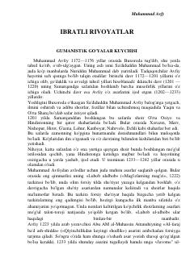

IRMuhammad Avfiyning hikmat va ibratga boy sharqona rivoyatlar to'plami.
Mazkur kitobda o'rta asr mutafakkiri Muhammad Avfiyning «Javome' ul-hikoyot va lavome' ur-rivoyot» asaridan saralab olingan ibratli hikoyat va rivoyatlar jamlangan. Asarda insoniy fazilatlar, axloq-odob, hikmatli so'zlar va tarixiy shaxslar hayotiga oid qiziqarli voqealar bayon etilgan. Kitob o'quvchilarni ezgulikka chorlab, ularning dunyoqarashini boyitishga xizmat qiladi.